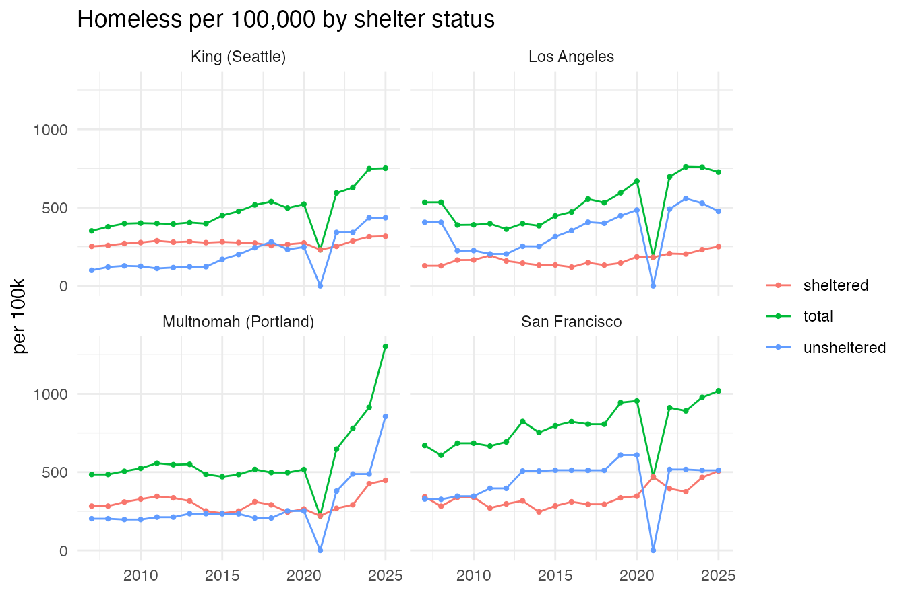
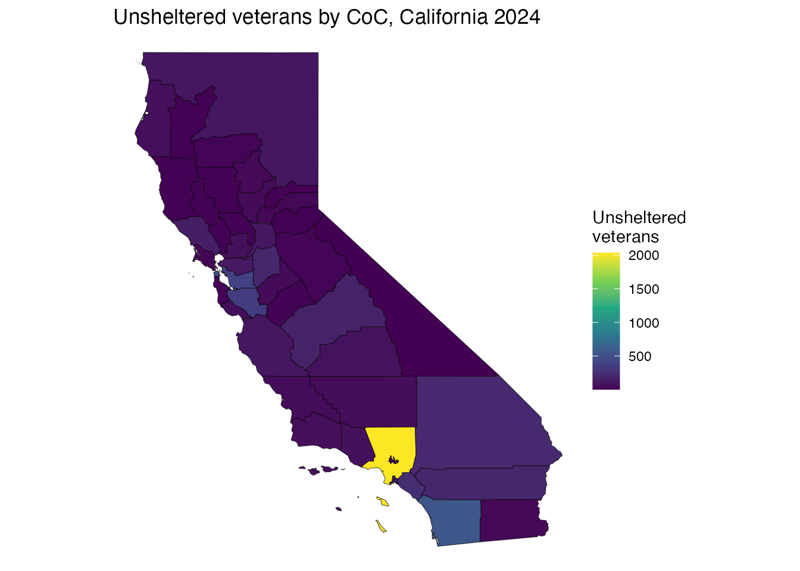
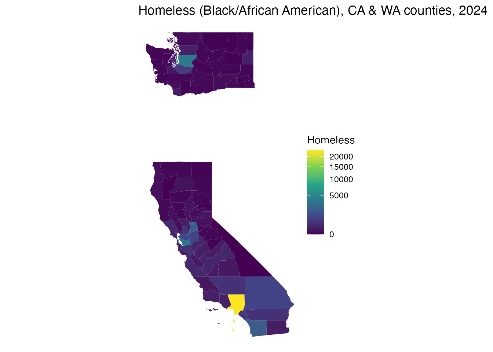
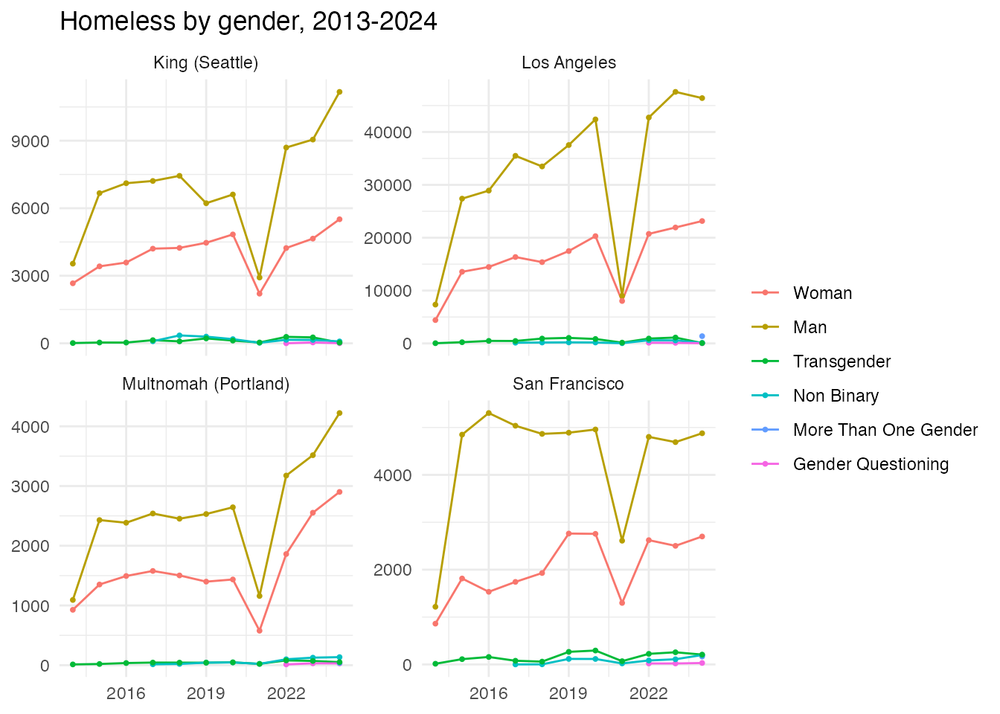
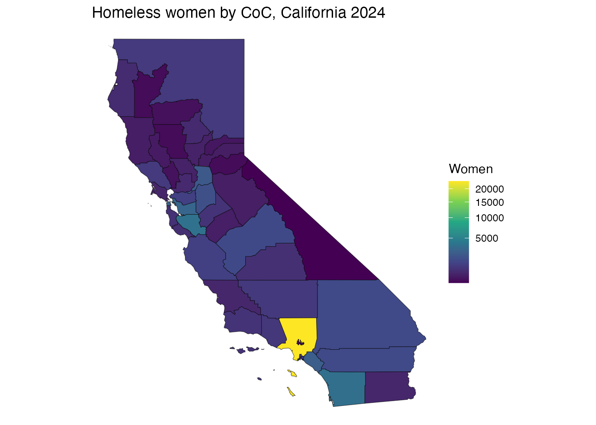
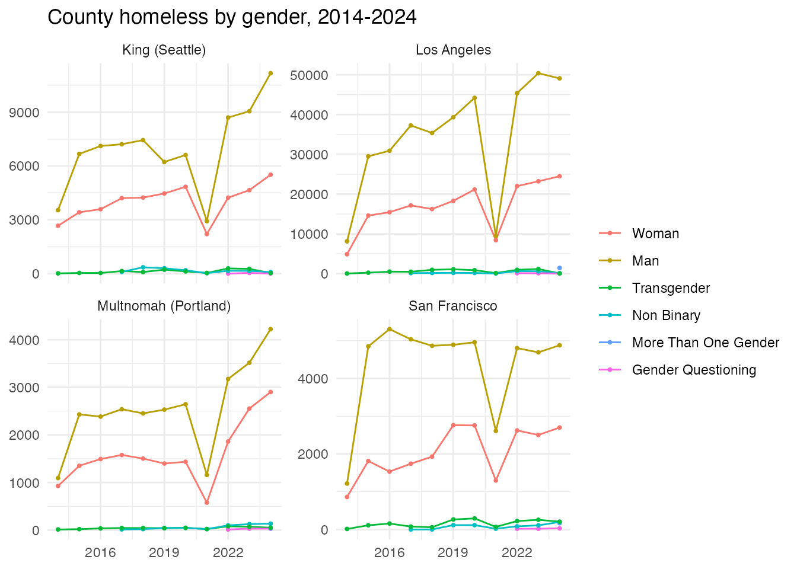
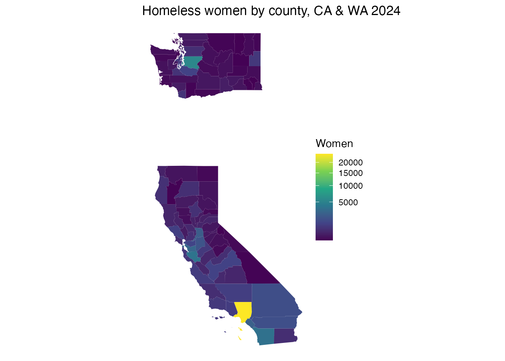

The crosswalk datasets link Census geography to HUD Continuum of Care (CoC) areas, in both directions:
-
tract_coc2019/tract_coc2022– a hard assignment of each census tract to the CoC containing it. -
tract_coc_wt2019– area weights for tracts that straddle a CoC border. -
county_coc2019– county <-> CoC area weights (w_cocapportions a CoC down to counties;w_countyaggregates a county up to CoCs).
The crosswalk procedure is due to Tom Byrne (Boston University); please credit Byrne when using these data.
Focus: a California and a Washington CoC
List the counties that make up Seattle/King County (WA-500) and how much of the CoC falls in each, using the area weights:
# use subset() (or which()): some tracts have NA COCNUM, and indexing a data
# frame with a logical vector containing NA returns spurious NA rows.
wa500 <- subset(county_coc2019, COCNUM == "WA-500")
wa500[order(-wa500$w_coc), c("fips", "w_coc")]
#> # A tibble: 5 × 2
#> fips w_coc
#> <chr> <dbl>
#> 1 53033 0.990
#> 2 53061 0.00411
#> 3 53053 0.00340
#> 4 53037 0.00225
#> 5 53007 0.000557The tracts assigned to San Francisco’s CoC (CA-501):
ca501 <- subset(tract_coc2019, COCNUM == "CA-501")
head(ca501[, c("GEOID", "fips", "COCNAME")])
#> GEOID fips COCNAME
#> 9833 06075010100 06075 San Francisco CoC
#> 9834 06075010200 06075 San Francisco CoC
#> 9835 06075010300 06075 San Francisco CoC
#> 9836 06075010400 06075 San Francisco CoC
#> 9837 06075010500 06075 San Francisco CoC
#> 9838 06075010600 06075 San Francisco CoC
nrow(ca501)
#> [1] 195Aggregating an ACS variable up to a CoC
Pull a tract-level American Community Survey variable and aggregate it to CoCs using the area weights. (Requires a Census API key; not run here.)
library(tidycensus)
library(dplyr)
# tract population for Washington
pop <- get_acs("tract", variables = "B01003_001", state = "WA",
year = 2019, survey = "acs5")
tract_coc_wt2019 %>%
inner_join(pop, by = c("GEOID")) %>%
group_by(COCNUM, COCNAME) %>%
summarise(coc_population = sum(estimate * w_tract), .groups = "drop") %>%
arrange(desc(coc_population))Homelessness by shelter status, four metro counties
county_pit gives county sheltered / unsheltered / total
estimates. Per-capita rates (per 100,000) for Los Angeles, San
Francisco, Multnomah (Portland) and King (Seattle), 2007–2025. The 2021
drop in unsheltered counts is HUD’s COVID-19 waiver.
library(ggplot2)
places <- data.frame(
place = c("Los Angeles", "San Francisco", "Multnomah (Portland)", "King (Seattle)"),
fips = c("06037", "06075", "41051", "53033"))
pop <- setNames(homeless$population, homeless$fips)
cp <- county_pit[county_pit$fips %in% places$fips, ]
cp$place <- places$place[match(cp$fips, places$fips)]
cp$pop <- pop[cp$fips]
long <- do.call(rbind, lapply(c("total", "sheltered", "unsheltered"), function(s)
data.frame(place = cp$place, year = cp$year, status = s,
per100k = cp[[s]] / cp$pop * 1e5)))
ggplot(long, aes(year, per100k, color = status)) +
geom_line() + geom_point(size = 0.8) +
facet_wrap(~ place) +
labs(title = "Homeless per 100,000 by shelter status", y = "per 100k",
x = NULL, color = NULL) + theme_minimal()
Mapping a subpopulation onto the spatial data
pit_coc_detail (CoC level) and
county_pit_detail (county level) carry the full breakdowns
– shelter type by subpopulation, including veterans, chronic, youth,
families, and HUD’s gender, race/ethnicity and age categories. Join them
to the spatial objects by coc_num (=
coc20XX$COCNUM) or fips.
# what subpopulations are available?
grep("Veteran|Female|Male|Black|Asian|White|Age |Chronically|Youth",
levels(pit_coc_detail$subpopulation), value = TRUE)[1:12]
#> [1] "Age 18 to 24"
#> [2] "Age 25 to 34"
#> [3] "Age 35 to 44"
#> [4] "Age 45 to 54"
#> [5] "Age 55 to 64"
#> [6] "Asian"
#> [7] "Asian or Asian American"
#> [8] "Asian or Asian American and Hispanic/Latina/o"
#> [9] "Asian or Asian American Only"
#> [10] "Black or African American"
#> [11] "Black, African American, or African"
#> [12] "Black, African American, or African and Hispanic/Latina/o"Unsheltered veterans by CoC, 2024, mapped:
library(sf)
#> Linking to GEOS 3.14.1, GDAL 3.12.3, PROJ 9.8.0; sf_use_s2() is TRUE
vets <- subset(pit_coc_detail,
year == 2024 & shelter == "Unsheltered" & subpopulation == "Veterans")
m <- merge(coc2024, vets[, c("coc_num", "count")], by.x = "COCNUM", by.y = "coc_num")
ggplot(m[m$ST == "CA", ]) +
geom_sf(aes(fill = count)) +
scale_fill_viridis_c(name = "Unsheltered\nveterans") +
labs(title = "Unsheltered veterans by CoC, California 2024") + theme_void()
The same at county level (e.g. a race/ethnicity group) joins
county_pit_detail to counties by
fips:
grp <- subset(county_pit_detail,
year == 2024 & shelter == "Overall" &
subpopulation == "Black, African American, or African")
cw <- merge(counties[counties$STUSPS %in% c("CA", "WA"), ],
grp[, c("fips", "count")], by = "fips")
ggplot(cw) + geom_sf(aes(fill = count), color = NA) +
scale_fill_viridis_c(trans = "sqrt", name = "Homeless") +
labs(title = "Homeless (Black/African American), CA & WA counties, 2024") +
theme_void()
Homelessness by gender over time
The 2007–2024 PIT file reports gender (Woman, Man, Transgender, Non
Binary, More Than One Gender, Gender Questioning), available 2013–2024
(HUD dropped it from the 2025 release, so it is NA in
2025). Composition over time for the four metro CoCs:
gen_levels <- c("Woman", "Man", "Transgender", "Non Binary",
"More Than One Gender", "Gender Questioning")
metros <- c("Los Angeles" = "CA-600", "San Francisco" = "CA-501",
"Multnomah (Portland)" = "OR-501", "King (Seattle)" = "WA-500")
g <- subset(pit_coc_detail,
shelter == "Overall" & coc_num %in% metros &
as.character(subpopulation) %in% gen_levels & !is.na(count))
g$place <- names(metros)[match(g$coc_num, metros)]
g$gender <- factor(as.character(g$subpopulation), levels = gen_levels)
ggplot(g, aes(year, count, color = gender)) +
geom_line() + geom_point(size = 0.7) +
facet_wrap(~ place, scales = "free_y") +
labs(title = "Homeless by gender, 2013-2024", y = NULL, x = NULL, color = NULL) +
theme_minimal()
Mapped: women experiencing homelessness by CoC, California 2024:
w <- subset(pit_coc_detail,
year == 2024 & shelter == "Overall" & subpopulation == "Woman")
m <- merge(coc2024, w[, c("coc_num", "count")], by.x = "COCNUM", by.y = "coc_num")
ggplot(m[m$ST == "CA", ]) + geom_sf(aes(fill = count)) +
scale_fill_viridis_c(trans = "sqrt", name = "Women") +
labs(title = "Homeless women by CoC, California 2024") + theme_void()
The same at the county level uses
county_pit_detail (joined to counties by
fips). Gender composition over time for the four metro
counties:
metro_fips <- c("Los Angeles" = "06037", "San Francisco" = "06075",
"Multnomah (Portland)" = "41051", "King (Seattle)" = "53033")
gc <- subset(county_pit_detail,
shelter == "Overall" & fips %in% metro_fips &
as.character(subpopulation) %in% gen_levels & !is.na(count))
gc$place <- names(metro_fips)[match(gc$fips, metro_fips)]
gc$gender <- factor(as.character(gc$subpopulation), levels = gen_levels)
ggplot(gc, aes(year, count, color = gender)) +
geom_line() + geom_point(size = 0.7) +
facet_wrap(~ place, scales = "free_y") +
labs(title = "County homeless by gender, 2014-2024", y = NULL, x = NULL,
color = NULL) + theme_minimal()
And homeless women by county, California & Washington 2024:
wc <- subset(county_pit_detail,
year == 2024 & shelter == "Overall" & subpopulation == "Woman")
cw <- merge(counties[counties$STUSPS %in% c("CA", "WA"), ],
wc[, c("fips", "count")], by = "fips")
ggplot(cw) + geom_sf(aes(fill = count), color = NA) +
scale_fill_viridis_c(trans = "sqrt", name = "Women") +
labs(title = "Homeless women by county, CA & WA 2024") + theme_void()
CoC codes over time
CoCs merge and are renumbered. Roll a historical code forward to its
surviving CoC with coc_mergers:
head(coc_mergers)
#> coc_pre coc_post merger_year
#> 1 MI-520 MI-500 2002
#> 2 TN-505 TN-503 2006
#> 3 KS-500 KS-507 2008
#> 4 MI-521 MI-500 2008
#> 5 MI-524 MI-500 2008
#> 6 MN-507 MN-503 2008
resolve_coc <- function(code, mergers = coc_mergers) {
repeat {
hit <- mergers$coc_post[match(code, mergers$coc_pre)]
if (is.na(hit) || hit == code) return(code)
code <- hit
}
}
resolve_coc("AR-502")
#> [1] "AR-503"